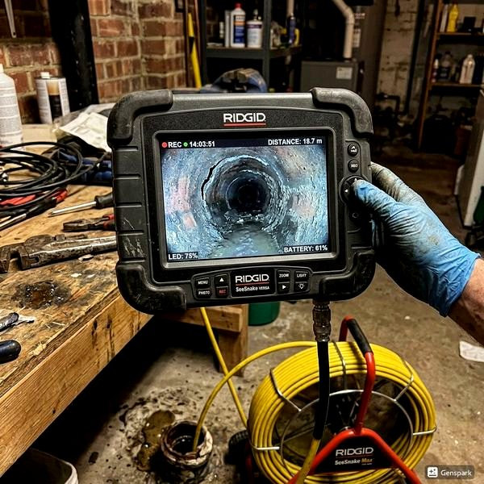
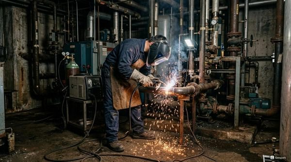
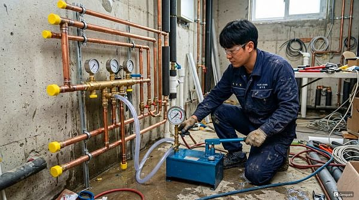

상업건물 배관 정기점검의 중요성과 점검 항목
2026년 4월 12일 | 제우스시설관리

상업건물의 배관 문제는 영업 중단과 직결됩니다. 음식점에서 배수가 안 되면 영업을 멈춰야 하고, 사무실에서 누수가 발생하면 장비 피해까지 이어집니다. 예방적 정기점검은 큰 사고를 막는 가장 경제적인 방법입니다.
상업건물 배관 점검은 분기별 1회가 권장됩니다. 점검 항목은 급수관 수압 측정, 배수관 배수 속도 확인, 배관 연결부 누수 점검, 그리스트랩 상태 확인, 옥상 배수관 점검 등입니다. 제우스시설관리는 체계적인 점검 체크리스트에 따라 빠짐없이 진단합니다.

점검 시 내시경 카메라로 배관 내부를 촬영하여 부식 정도와 이물질 축적 상태를 확인합니다. 관로탐지기로 벽 속 배관의 누수 여부를 비파괴로 진단하며, 문제 발견 시 즉시 보수합니다.
정기점검의 비용 절감 효과는 명확합니다. 배관 파열로 인한 긴급 수리비는 정기점검 비용의 5~10배에 달합니다. 누수로 인한 인테리어 피해, 영업 중단 손실까지 고려하면 예방적 관리의 가치는 더욱 큽니다.

제우스시설관리는 상업건물 전용 월정액 관리 프로그램을 운영합니다. 정기 점검, 긴급 출동, 배관 세척을 패키지로 제공하여 건물 관리의 부담을 덜어드립니다. 28분 내 긴급출동 보장, 전화: 010-4406-1788